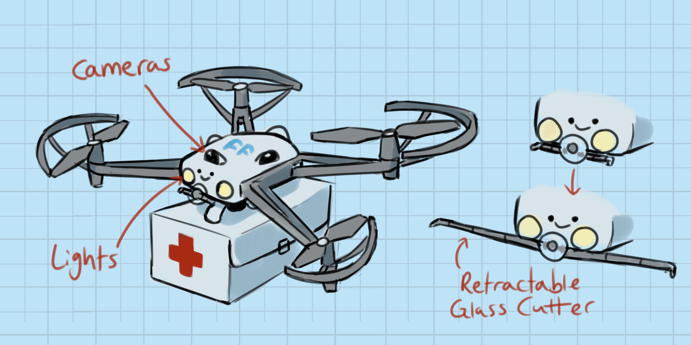

Thousands of emergency calls are made in America every year. Many of these calls end up in tragedy, as many emergency vehicles don't make it to their destination on time. Friendly Flyers is an organization made to help those who are waiting for medical or mental help, and save more lives.
Friendly Fliers are controlled and monitored by real people. After calling for a Friendly Flier on the home page and specifying the desired assistance, a Flier from a local station will be sent to the scene. A care package consisting of first aid supplies, or any other neccesary equipment will arrive. In the event that the flier has no method of entry to a building, and the person in need of assistance is unable to let it in, it will carefully remove a portion of the window glass to let itself in. When the drone arrives to the person in need, the dispatcher controlling the flier will monitor the situation, talk them through what to do, and keep them company until help arrives.
The drones sometimes need testing and fixing so we employ people to fix them. We also need professional drone flyers to fly and operate the drone towards the scene.
The cost is $10 a month if you have paid subscription, and a one-time payment of $15 if you have no paid subscription.